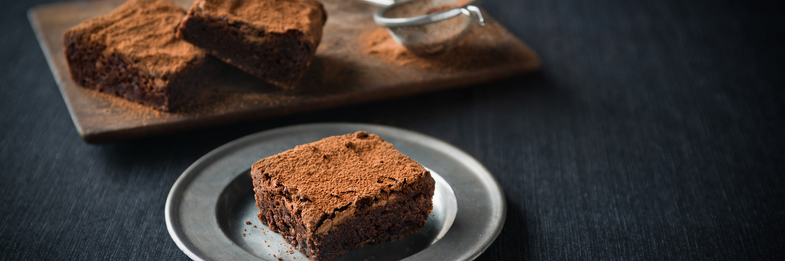

Le Brownie

Le brownie est un gâteau au chocolat, fondant par endroits, cuit au four. Un glaçage peut être ensuite déposé sur sa surface. Sa crème de préparation peut également être mangée sans être cuite. Les ingrédients nécessaires afin de réaliser le brownie sont du sucre, des œufs, de la farine, du beurre et du chocolat
-
ÉTAPE 1
Faites fondre le chocolat cassé en morceaux avec le beurre.
-
ÉTAPE 2
Pendant ce temps, battez les oeufs avec le sucre jusqu'à ce que le mélange blanchisse.
-
ÉTAPE 3
Ajoutez la farine, le sucre vanillé, et ajoutez le chocolat.
-
ÉTAPE 4
Versez le tout dans un moule, et enfournez à 180°C (thermostat 6)pendant 15 min...
-
ÉTAPE 5
Et voilà !